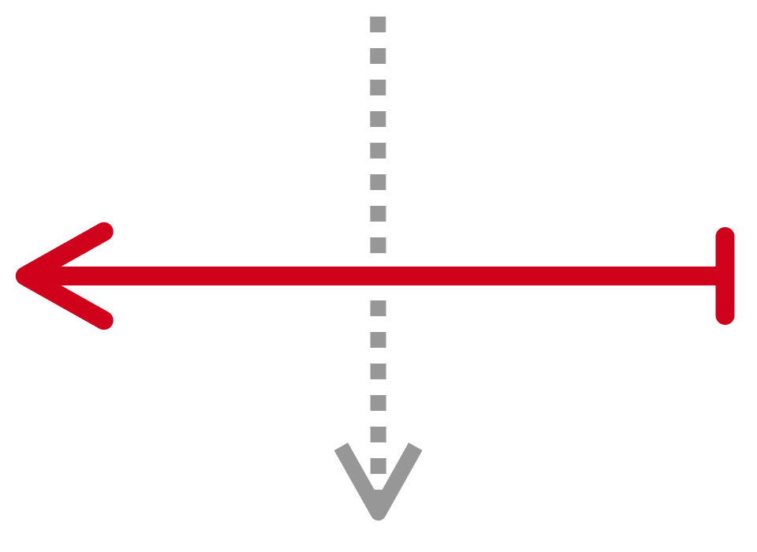
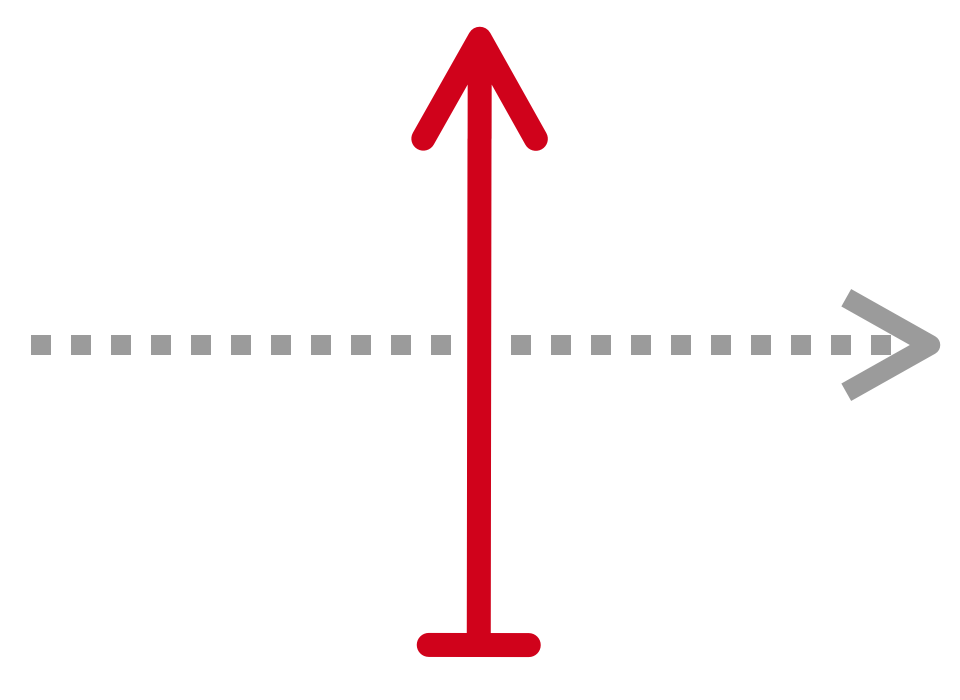
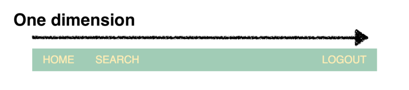
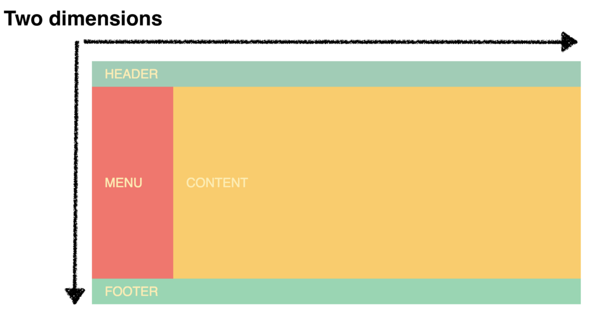

Layout
Layout (раскладка) –
взаимное расположение крупных блоков страницы.

Таблицы
| td | td | td |
колонка раз
колонка два
колонка три
| td | td | td |
- колонки выравниваются по высоте
- адекватна при переполнении
- куча лишней разметки
- не семантично
Флоаты
- можно задавать размеры
- переносятся
- колонки не выравниваются по высоте
-
спецэффекты (схлопывание родителя)
и хаки (clearfix) - перекрытие контента при переполнении
Инлайн-блоки
-
реагируют на выравнивание
(text-align и vertical-align) - можно задавать размеры
- переносятся
- лишние пробелы
- при переполнении всё может развалиться
- колонки не выравниваются по высоте
- таблицы — для табличных данных
- флоаты — для обтекания текстом
- инлайн-блоки — лучше не надо :)
- флексбоксы 👍
- гриды 👍
Флексбокс
flex = гибкий
Гибкие раскладки:
- управление распределением места
- мощные возможности для выравнивания
display: flex
флекс-контейнер (flex-container)
флекс-элемент (flex-item)
главная ось (main axis)
поперечная ось (cross axis)
Флекс-элементы располагаются вдоль главной оси.
Свойство flex-direction меняет её направление.
flex-direction: row
по умолчанию
flex-direction: row-reverse
flex-direction: column
flex-direction: column-reverse
Свойство justify-content управляет выравниванием флекс-элементов вдоль главной оси.
justify-content: flex-start
по умолчанию
justify-content: flex-end
justify-content: center
justify-content: space-between
justify-content: space-around
Поперечная ось всегда перпендикулярна главной оси.
Направление изменить нельзя.



Свойство align-items управляет выравниванием флекс-элементов вдоль поперечной оси.
align-items: stretch
по умолчанию
align-items: flex-start
align-items: flex-end
align-items: center
align-items: baseline
align-self даёт переопределить выравнивание у флекс-элемента.
Значения те же, что и у align-items.
Что если флекс-элементов
много?
Будут сжиматься до предела.
Выйдут за пределы контейнера, но продолжат располагаться в один ряд.
Переносом элементов управляет свойство flex-wrap, и по умолчанию перенос запрещён.
flex-wrap: nowrap
wrap
flex-wrap: wrap-reverse
Можно комбинировать направление и перенос в свойстве flex-flow:
.container
{
display: flex;
flex-flow: row wrap;
}Cвойство align-content управляет распределением рядов флекс-элементов вдоль поперечной оси.
align-content: stretch
по умолчанию
align-content: flex-start
align-content: flex-end
align-content: center
align-content: space-between
align-content: space-around
Если активно align-content,
то что с align-items?
align-content: stretch; align-items: center
С помощью свойства order можно менять порядок следования флекс-элементов.
order: 0
по умолчанию
order: 1
order: -1
order
Как указать размер флекс-элемента?
Cвойство flex-basis задает размер на главной оси.
Если не указать, то базовый размер возьмётся из ширины или высоты.
flex-basis: 50%
Почему размер базовый?
Это исходный размер.
Свободное место можно распределять в соответствии с коэффициентом жадности флекс-элемента (flex-grow).
flex-grow: 0
по умолчанию
flex-grow: 1
flex-grow: 2
-
Посчитаем свободное место:
free space = width - ∑ flex-basis -
Посчитаем долю свободного места:
fraction = free space / ∑ flex-grow -
Вычислим итоговый размер:
final size = flex-basis + (fraction × flex-grow)
- не схлапываются
- не выпадают
- отступ с auto заберет все свободное место по своему направлению
- часть базового размера элемента
- free space = 980px - 3 × 65px = 785px
- fraction = 785px / (0 + 1 + 2) = ~262px
- final size1 = 65px + (262px × 0) = 65px;
- final size2 = 65px + (262px × 1) = ~326px;
- final size3 = 65px + (262px × 2) = ~589px;
Что если сумма базовых размеров больше, чем свободного места?
Будем делить отрицательное пространство в соответствии с коэффициентами сжатия (flex-shrink).
flex-shrink: 1
по умолчанию
flex-shrink: 0
flex-shrink: 0
С помощью сокращённого свойства flex можно одновременно
задать
флекс-элементу flex-grow, flex-shrink
и flex-basis.
flex: [flex-grow] [flex-shrink] [flex-basis]
.elem
{
flex: initial; /* = 0 1 auto — все по умолчанию */
}flex: [flex-grow] [flex-shrink] [flex-basis]
.elem
{
flex: initial; /* = 0 1 auto — все по умолчанию */
flex: auto; /* = 1 1 auto */
}flex: [flex-grow] [flex-shrink] [flex-basis]
.elem
{
flex: initial; /* = 0 1 auto — все по умолчанию */
flex: auto; /* = 1 1 auto */
flex: none; /* = 0 0 auto */
}flex: [flex-grow] [flex-shrink] [flex-basis]
.elem
{
flex: initial; /* = 0 1 auto — все по умолчанию */
flex: auto; /* = 1 1 auto */
flex: none; /* = 0 0 auto */
flex: 2; /* число -> flex-grow,
= 2 1 auto */
}flex: [flex-grow] [flex-shrink] [flex-basis]
.elem
{
flex: initial; /* = 0 1 auto — все по умолчанию */
flex: auto; /* = 1 1 auto */
flex: none; /* = 0 0 auto */
flex: 2; /* число -> flex-grow,
= 2 1 auto */
flex: 50%; /* единица измерения длины -> flex-basis = 50%,
= 0 1 50% */
}flex: [flex-grow] [flex-shrink] [flex-basis]
.elem
{
flex: initial; /* = 0 1 auto — все по умолчанию */
flex: auto; /* = 1 1 auto */
flex: none; /* = 0 0 auto */
flex: 2; /* число -> flex-grow,
= 2 1 auto */
flex: 50%; /* единица измерения длины -> flex-basis = 50%,
= 0 1 50% */
flex: 2 50%; /* flex-grow & flex-basis,
= 2 1 50% */
}flex: [flex-grow] [flex-shrink] [flex-basis]
.elem
{
flex: initial; /* = 0 1 auto — все по умолчанию */
flex: auto; /* = 1 1 auto */
flex: none; /* = 0 0 auto */
flex: 2; /* число -> flex-grow,
= 2 1 auto */
flex: 50%; /* единица измерения длины -> flex-basis = 50%,
= 0 1 50% */
flex: 2 50%; /* flex-grow & flex-basis,
= 2 1 50% */
flex: 2 0 50%;
}А самое крутое...
Родителю — display: flex,
ребёнку — margin: auto
Полезные ссылки
Грид
grid = сетка
Даёт возможность располагать элементы по сетке!
display: grid
грид-контейнер (grid-container)
грид-элемент (grid-item)
линия (grid-line)
ячейка (grid-cell)
область (grid-area)
дорожка (grid-track)
интервал (grid-gap)

Чтобы наполнить сетку
колонками и рядами
существуют свойства
grid-template-columns
и grid-template-rows.
.container
{
display: grid;
grid-template-columns: 100px auto 100px; /* ширины столбцов */
grid-template-rows: 100px 100px 100px; /* высоты рядов */
}.container
{
display: grid;
grid-template-columns: 100px auto 100px; /* ширины столбцов */
grid-template-rows: 100px 100px 100px; /* высоты рядов */
}.container
{
display: grid;
grid-template-columns: 100px auto 100px; /* ширины столбцов */
grid-template-rows: 100px 100px 100px; /* высоты рядов */
}.container
{
display: grid;
grid-template-columns: 100px auto 100px; /* ширины столбцов */
grid-template-rows: 100px 100px 100px; /* высоты рядов */
}.container
{
display: grid;
grid-template-columns: 100px auto 100px; /* ширины столбцов */
grid-template-rows: 100px 100px 100px; /* высоты рядов */
}.container
{
display: grid;
grid-template-columns: 100px auto 100px; /* ширины столбцов */
grid-template-rows: 100px 100px 100px; /* высоты рядов */
}.a
{
grid-row: 1 / 2;
grid-column: 1 / 4;
}
.a
{
grid-row: 1 / 2;
grid-column: 1 / 4;
}
.b
{
grid-row: 2 / 4;
grid-column: 1 / 2;
}
.a
{
grid-row: 1 / 2;
grid-column: 1 / 4;
}
.b
{
grid-row: ➩ 1 / 4;
grid-column: 1 / 2;
}
.a
{
grid-row: 1 / 2;
grid-column: 1 / 4;
➩ z-index: 1;
}
.b
{
grid-row: 1 / 4;
grid-column: 1 / 2;
}
Размер дорожки можно указывать в fr – долях свободного места.
Свободное место вычисляется после расположения всех элементов фиксированных размеров.
.container
{
display: grid;
grid-template-columns: 100px 1fr 1fr;
grid-template-rows: 100px 100px 100px;
}.a
{
grid-column: span 3;
}
.a
{
grid-column: span 3;
}
.b
{
grid-row: span 2;
}
В контейнере можно создавать именованные области с помощью свойства grid-template-areas.
Поместить элемент в область можно свойством grid-area.
.container {
display: grid;
grid-template-columns: 1fr 1fr;
grid-template-rows: 100px 100px 100px;
grid-template-areas: 'sand water'
'sand water'
'grass grass';
}.a {
grid-area: grass;
}
.b {
grid-area: sand;
}
.c {
grid-area: water;
}.container {
display: grid;
grid-template-columns: 1fr 1fr;
grid-template-rows: 100px 100px 100px;
grid-template-areas: 'sand water'
'sand water'
'. grass';
}.a {
grid-area: grass;
}
.b {
grid-area: sand;
}
.c {
grid-area: water;
}Короче!
Свойство grid-template:
.container
{
display: grid;
grid-template: 'header header' 100px
'sidebar content' 100px
'footer content' 100px
/ 100px auto;
}Используя свойство grid-gap, можно управлять размером интервалов между линиями.
Интервал только между рядами — grid-row-gap, только между столбцами — grid-column-gap.
.container
{
grid-column-gap: 1%;
grid-row-gap: 16px;
}12 колонок!
Писать руками?
.container
{
grid-template-columns: 1fr 1fr 1fr 1fr 1fr 1fr 1fr 1fr...;
}НЕТ. Есть функция repeat()
.container
{
grid-template-columns: repeat(12, 1fr);
}Полезные ссылки
Флексбокс или грид?
.container
{
display: flex;
}.column-i
{
flex: auto;
}.container
{
display: grid;
grid-template-columns:
1fr 1fr 1fr;
}-
одно измерение
— ряд или столбец
-
два измерения
— ряды и столбцы


-
одно измерение
— ряд или столбец - content-first
-
два измерения
— ряды и столбцы - layout-first
Home
Search
Logout
.header
{
display: flex;
align-items: center;
}
.logout
{
margin-left: auto;
}
.header
{
display: grid;
grid-template-columns:
repeat(10, 1fr);
}
.logout
{
grid-column: 10;
}
HEADER
CONTENT
.container
{
display: grid;
grid-template-columns: repeat(12, 1fr);
grid-template-rows: 50px 350px 50px;
}.header
{
display: flex;
align-items: center;
}
.logout
{
margin-left: auto;
}.header
{
grid-column: span 12;
}
.menu
{
grid-column: span 2;
}
.content
{
grid-column: span 10;
}
.footer
{
grid-column: span 12;
}Подходы можно совмещать

Две новости
Используя флексбокс и грид,
можно сверстать всё что угодно
А таблицы пригодятся для вёрстки электронных писем
Про домашку
Медиа-выражения –
условное применение CSS-правил.
Одна разметка, разные наборы стилей.
- all – все устройства (по умолчанию)
- print — принтеры и режим предпросмотра
- screen — устройства с экраном
- speech — скринридеры
- width – ширина вьюпорта
- height — высота вьюпорта
- orientation — ориентация вьюпорта
- resolution — разрешение устройства вывода
/* для мобильных */
body {
background: red;
}
/* для планшетов */
@media screen and (min-width: 768px) {
body {
background: yellow;
}
}
/* для десктопов */
@media screen and (min-width: 1280px) {
body {
background: blue;
}
}